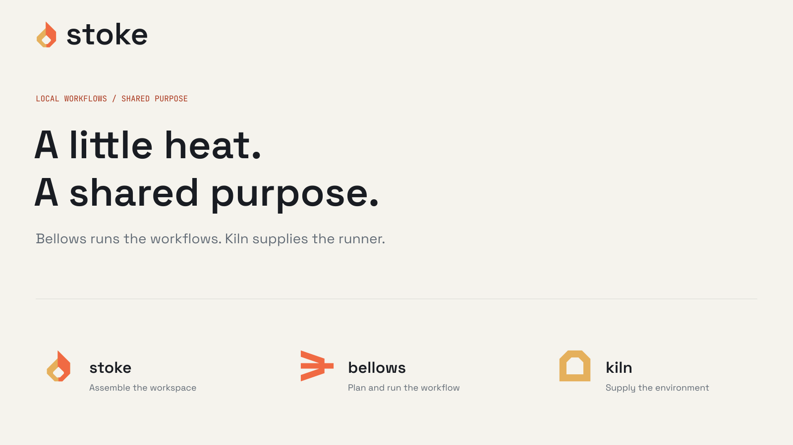
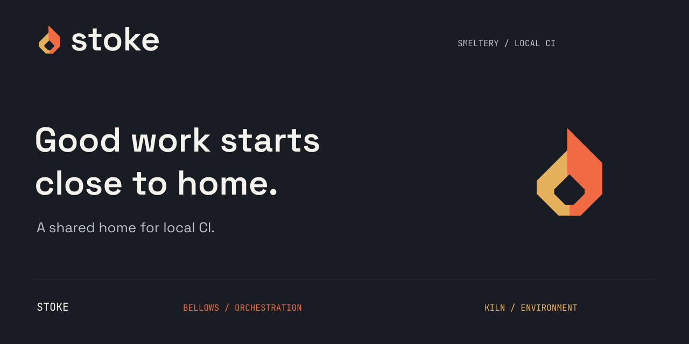
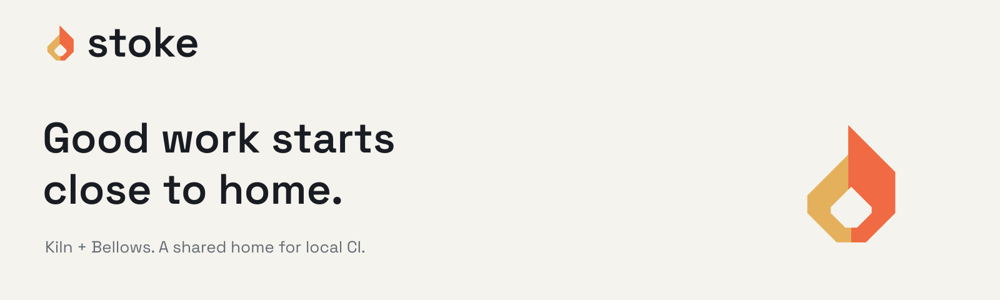

Two tools. A shared home.
Stoke assembles Kiln and Bellows for local GitHub Actions feedback. The angular flame joins Kiln’s gold and Bellows’ ember. Shared typography and neutral colors make the family recognizable, while each member keeps its own mark and responsibility.
- Keep one quarter of the symbol height clear around the visible lockup.
- Minimum digital sizes: 16 px symbol height and 160 px lockup width.
- Use the supplied geometry, orientation, spacing, and color variants.
Gold and ember. Paper and ink.
Use Paper and Ink for most of the composition. Gold belongs to Kiln, Ember to Bellows; Stoke combines both in its flame. Use Ink text on Gold or Ember, and Burnt Gold #7A4D16 or Burnt Ember #A9361C for text on Paper.
One clear typographic system.
400-700 for identity, headings, and body text.
Local workflows. Shared purpose. A shared typographic foundation connects Stoke, Kiln and Bellows while each keeps its own identity.
JetBrains Mono
400-500 for commands, metadata, and data.
$ git clone https://github.com/smeltery/stoke.git $ cd stoke $ bash scripts/fleet.sh setup
Display 64/68/600 · Heading 32/38/600 · Body 16/26/400 · Utility 12/18/500
The same system, put to work.
The identity carries through the shared workspace, documentation, repository artwork and landing site. These exports are rebuilt from the same vector masters.
Documentation header

Social preview

README banner

Capable. Approachable. Direct.
Brand language
Good work starts close to home.
Local workflows. Shared purpose.
Personality belongs in headlines and layout.
Product language
A shared home for local CI.
Stoke assembles the workspace. Bellows runs workflows using act and Docker. Kiln supplies the Wolfi runner image. Keep setup separate from runtime installation, and keep hosted CI for coverage and merge enforcement.
Ready to use.
Vector and raster identity artwork, favicon sizes, font originals and licenses, CSS and JSON tokens, a palette, and source notes.